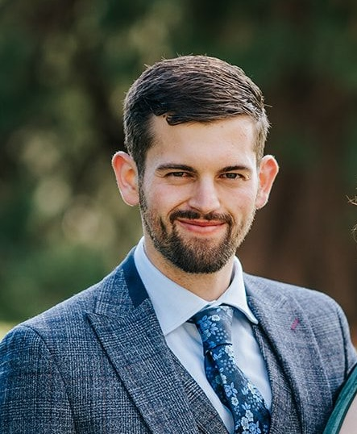
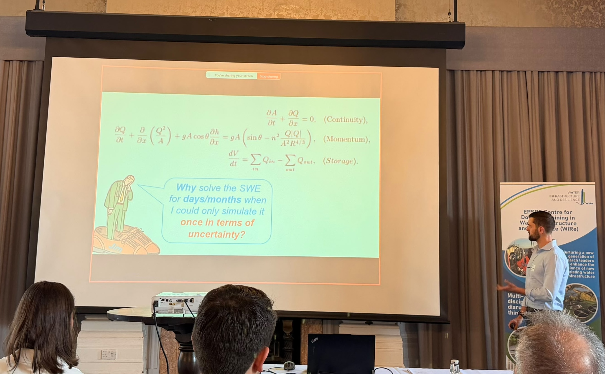

PhD Candidate in Electrical & Electronic Engineering
Email: gcrowley1@sheffield.ac.uk
I received my BSc in Mathematics from the University of Sussex, England in 2022, and I am currently a PhD student under the primary supervision of Dr Iñaki Esnaola.
My research project is titled Machine Learning Methods for Monitoring of Complex Water and Sewer Network Infrastructure, sponsored by Thames Water and the EPSRC CDT in Water Infrastructure and Resilience.
My research interests lie within probability theory, information theory, numerical solution to ODEs and PDEs, and data science. My current project uses information-theoretic measures as cost functions for optimal sensor placement and machine learning for anomalous event detection in waste networks.
Excited to have travelled back to the UK and presented my research at the WIRe Annual Conference in Sheffield, titled "Monitoring our sewer networks: the good, the bad, and what's left to improve". My talk covered previously published work on sensor placement in sewer networks, insights on industry trends in monitoring outsourcing, and a preview of upcoming work soon to be submitted for publication.

Delighted to start a 6-month stay at Princeton University as a visiting student research collaborator, working under the guidance of Prof. H. Vincent Poor.
Proud to share a preprint on arXiv proving and modifying concentration inequalities for scaled self-bounding functions. The results improve on existing bounds and apply to random sampling of submodular functions, e.g., mutual information.
(Note, Jul 2026: An updated version with minor corrections will be uploaded in the future.)I attended the 26th International Water Association (IWA) Young Water Professionals (YWP) Conference in Brighton, and presented a poster about my work on the effects of sensor placement in large sewer networks.
I attended the Eighth London Symposium on Information Theory at St. John’s College (Old Divinity School), University of Cambridge, where I presented a poster with some preliminary results about applying concentration inequalities to information-theoretic sensor placement problems. It was great to attend with my research group: Francisco Daunas, Alfie Cody, Haomin Li, Bruno Sunsundegi Oiarzabal and Yaiza Bermudez!
Thrilled to receive the Fellowship of the Higher Education Academy (FHEA) award in recognition of my higher education teaching and learning support practice.
Happy to share that my first first-author paper, on sensor placement for large sewer networks, is now published in Water Research. Many thanks to my co-authors and partners at Thames Water for their support throughout a rigorous peer-review process.
Crowley, G., & Esnaola, I. (2025). arXiv:2509.22375. V2 will be available sometime in the future.
View arXiv →Crowley G, Tait S, Panoutsos G, Speight V, Esnaola I. Water Research. 2025.
Read PDF →Crowley, G., & Esnaola, I. (2024). arXiv:2409.03541.
View arXiv →Supervised by Prof. A. Madzvamuse, Dr. J. Van Yperen, and Dr. E. Campillo-Funollet.